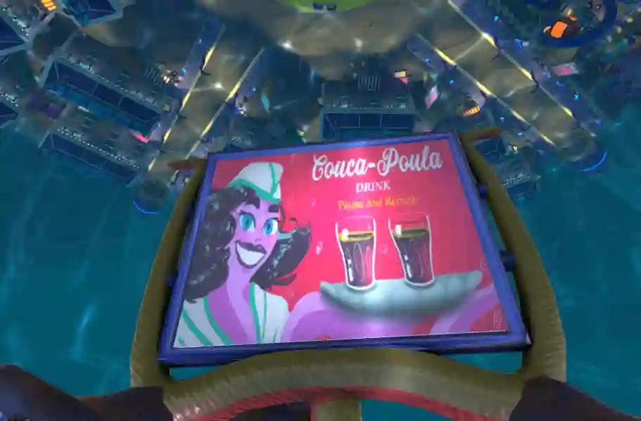
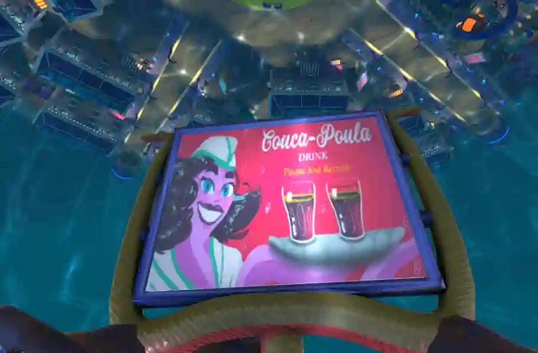
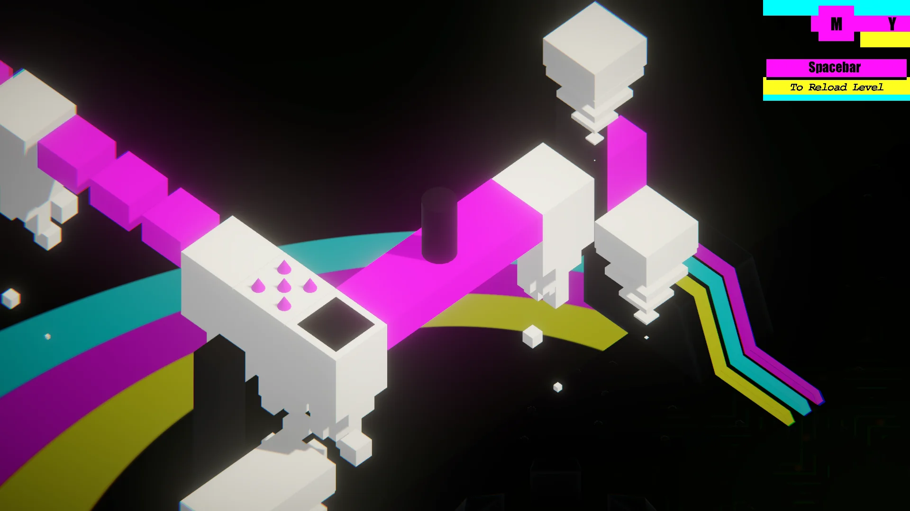
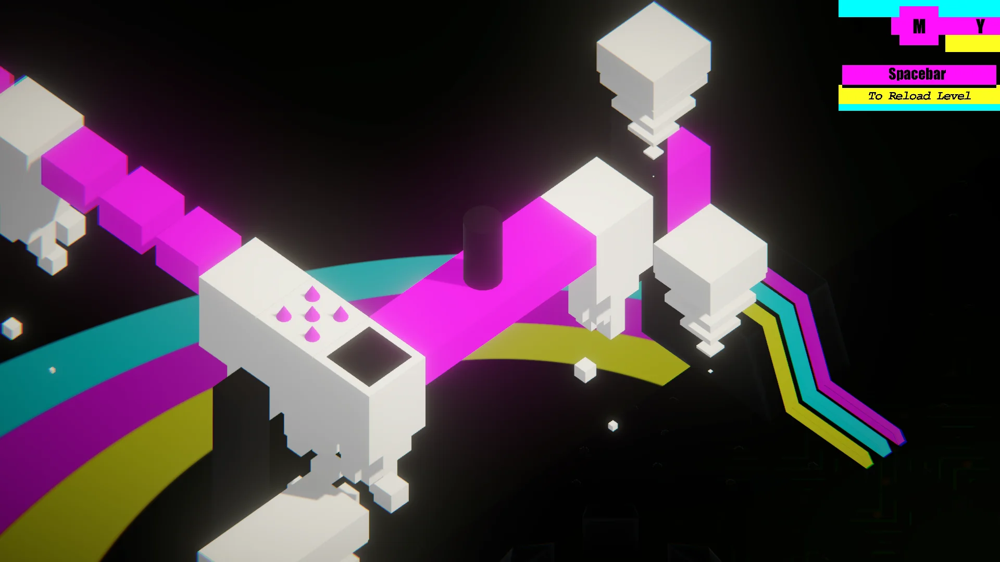

Bienvenue !
Contact

Pirate Chips
Rôle sur le projet : Direction créative, chef de projet
Soyez le plus patate des moussaillons et prenez part à cette bataille sans foi ni loi !
Projet Réalisé en quatre mois dans le cadre du DESS en Design de jeux à l’Université de Montréal.
Une énorme expérience qui m’a permis de développer mes compétences de gestion de projet et certaines compétences artistique (3D principalement).
Étalé sur quatre mois, le scope grand mais nous le savions, avec une telle cohésion d’équipe, que nous pouvions le faire.
Mon rôle, en plus de la modélisation 3D, a été de gérer toute l‘équipe, dont 4 externes, et tout le suivis du projet, organisant toutes les réunions, mettant en place
des SCRUM tous les deux jours pour un suivi efficace des tâches. Cela m’a permis d’améliorer ma compréhension et l’application de la méthode AGILE.
Toujours dans la joie et la bonne humeur, une équipe soudée et un prototype qui en vaut clairement la peine, l’aventure ne s’arrête pas là !

 

L'Empire Poulpoutou
Rôle sur le projet : Direction Créative, chef de projet
Projet réalisé en 7 mois, durant la deuxième année de la maîtrise MAJIC à Cannes, force de proposition l’année précédente pour être choisi pour le développement.
Le premier vrai projet grandeur nature que j’ai pu gérer et diriger, la gestion de projet, des tâches et des responsabilités de chacun.e.
Une équipe de dix personnes autour du même projet et de la même idée, donner vie à ce royaume de poulpe. Un aventure unique dans mes débuts dans la gestion de projet
et la réalisation de jeux vidéo.
Un rendu plus qu’à la hauteur des attentes, une équipe fière de son travail, tous.tes étions fier.es de le réaliser ensemble, décrochant la meilleur note face aux autres projets.
Ce projet a été présenté au Festival International du Jeu à Cannes en 2020.
Eau'Scours
Présentation d’un pitch à l’Indie Asylum
Petit projet Unity pour une présentation d’un pitch, un projet portant sur la question de l’eau, son utilisation et les moyens de la préserver
Projet de jeu sérieux, avec une forme plus attractive, qui permettrait d’éduquer sur la gestion de l’eau ainsi que les gestes du quotidien qui peuvent
empêcher sa contamination ou sa pollution.
Une idée de jeu, qui plus est un jeu sérieux (ou jeu à agenda), qui me touche particulièrement car il démontre ma motivation, en créant un pseudo prototype
intégrant des diapositives pour la présentation, mais aussi mes convictions, tant pour le côté social et pédaogigique, mais engagé pour des causes communes.


Backstage
Rôle sur le projet : Artiste 3D
Game Jam de une semaine, première fois que je participe à une jam aussi longue, et cela m’a permis de prendre le temps et de tester un style qui me plait
la 3D pixel art (non voxel, mais texture pixel art).
Nous étions cinq sur le projet, avec mon coéquipier habituel des jams réalisées sur Montréal.
Je pense que c’était une bonne expérience pour ma gestion personnelle de mes propres tâches, de mes rendus et de voir que je suis capable de faire mieux que d’habitude
avec un petit peu plus de temps de création.

 

Color Quest
Rôle sur le projet : Artiste
Game Jam d’une fin de semaine, qui a donné naissance à un projet qui s’est vu sur le plus long terme
Effectivement nous avons continué le développement après la jam, se concentrant sur ajouter des mécaniques et des niveaux.
Nous avons eux beaucoup de fun à faire cette jam, et voir se projet grandir petit à petit. la dernière version étant la meilleure à date, le projet a vu un
suivis intéressant pendant un moment, puis nous avons décidé de le laisser dans un état plus avancé, et que l’on considérait comme bon.
Cela m’a permis de tester des petites choses avec des couleurs plus intenses, comprendre comment rendre visibles certaines choses en orthographique.


SAGE : l'art de ne pas l'être
Rôle sur le projet : Artiste Voxel
Game Jam de fin de semaine réalisée en 2021 (Video Games Lab Gamejam).
Très bonne expérience, et surtout un moyen d’essayer un style que j’affection, le voxel.
Recréer un environnement d’une vieille salle d’arcade (peut être un peu plus colorée qu’à l’époque) en voxel était vraiment fun
et m’a permis de m’amuser avec les logicels de voxel.
J’en garde un très bon souvenir et une bonne opportunité de tester ce style, cependant il engendre certains problèmes de performance, qu’un petit
jeu ne devrait pas être aussi gourmant.

Gang Graine
Rôle sur le projet : Artiste 3D, Level Design
Game Jam d’une fin de semaine (plutôt réalisée en un jour et demi), un vrai défi de quantité de production
Effectivement j’ai du réaliser une petite ville dans un style cartoon, création de plusieurs assets avec un pipeline bien défini,
de la modélisation, en texture et en intégrant le tout dans une scène sur Unity.
La création du niveau en entier était un défi dans la rapidité car cela prend énormément de temps, mais cela m’a permis de peaufiné mes capacités à
gérer des éléments dans une scène sur Unity.
Le rendu était comme attendu, et l’expérience prise par ce petit projet est intéressant tant pour le temps restraint que pour la quantité de travail à fournir.


WISP
Welcome to WISP!
Discover a luxurious casino which encloses many secrets. You’ll be accompanied by Wisp, a small and mysterious will-o’-the-wisp.
He will help you solve puzzles and find your tarots cards back, guiding you through the darkness of this place.
Let the gambling begin!
Controls: mouse
Gamejam's Team:
Yoann MAISONNEUVE: Unity Developer, Level Designer & Git Master https://github.com/YoannRodrigo/
Anthony CUTTIVET: Unity Developer https://anthonycuttivet.com/
Cyril GAJAN: Unity Developer
Quentin BAUDRY: Sound Designer
Hélène LITZLER: 2D Game Artist & UI/UX Designer https://www.instagram.com/_kir.art/
Tom BONNOT: 3D Gamed Artist https://tombonnotgraphist3d.github.io/